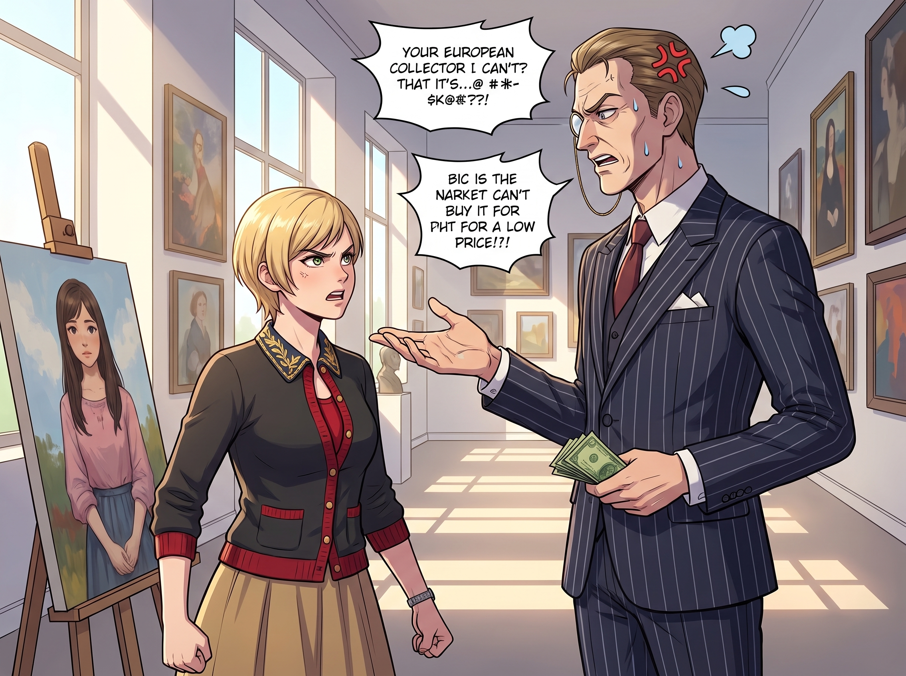
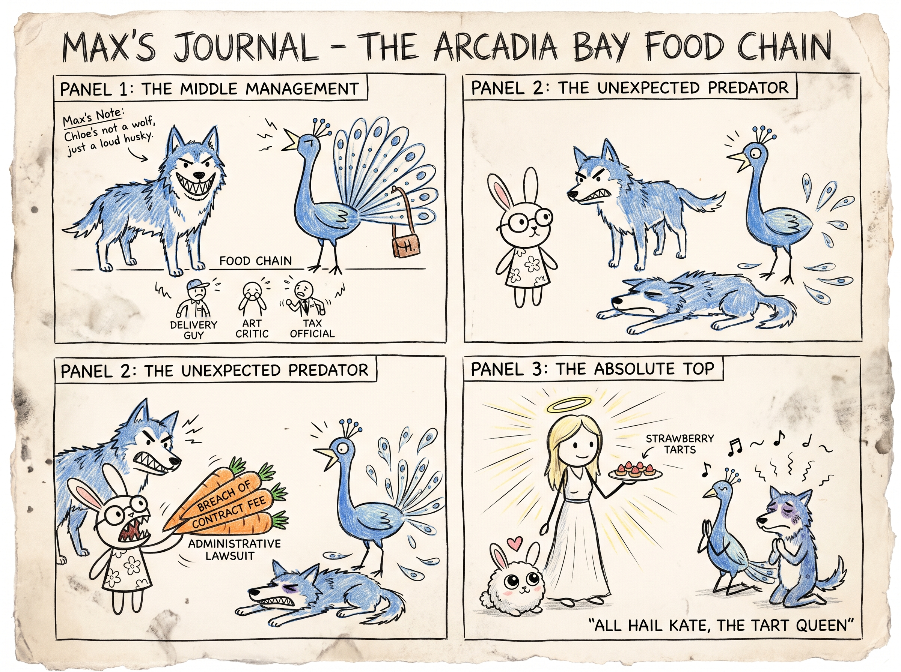

食物鏈的頂點（倒敘）


準確來說，在波特蘭的世俗社會裡，現在的 Lily 確實處於一種絕對無敵的狀態。
她之所以無敵，是因為她完美融合了二號車廂四個人的特質，卻又神奇地避開了她們所有的致命弱點。她擁有 Chloe 的物理破壞力卻不衝動；她掌握了 Victoria 的階級壓迫感卻沒有傲慢的包袱；她具備 Max 的細膩觀察力卻不會陷入內耗。
最可怕的是，她把這一切致命的毒素，全部包裹在了一層名為 Kate Marsh 式純潔無害的糖衣裡。一個穿著碎花裙、戴著圓框眼鏡、滿嘴愛與和平的女孩，微笑著把你的公司搞破產，這種反差感足以摧毀任何對手的心理防線。
面對這樣一個人形兵器，Victoria 使喚不動她（因為會被降維打擊），Chloe 打不過她（因為會被行政手段與道德綁架雙重絞殺），Max 更是躲著她走（因為太害怕自己的社交能量被榨乾）。
在這個瘋狂的食物鏈頂端，唯獨 Kate Marsh，是能將這隻霸王龍瞬間變成小白兔的絕對規則。
但 Kate 對 Lily 的治，絕不是物理意義上的壓制，而是一種近乎宗教般的靈魂絕對統治。
一、絕對的道德結界
在 Lily 已經被黑魔法徹底污染的心裡，Kate 是這個世界上最後一塊不可褻瀆的淨土。任何在 Kate 面前展現出的邪惡與算計，對 Lily 來說都是一種不可饒恕的罪過。
某個週四的下午，畫廊裡來了一位極度傲慢的歐洲收藏家。他不僅對 Victoria 的眼光大肆批評，還試圖用極低的價格強行收購一幅新銳藝術家的畫作，言語間充滿了性別歧視。
當時，Lily 已經悄悄戴上了手套。她不僅黑進了這位收藏家的海外避稅帳戶，還準備好了十三份發給歐盟反洗錢機構的匿名舉報信。她甚至已經計算好了，如果對方敢動手，她要用畫廊角落的青銅雕塑底座，敲擊對方小腿的哪個穴位能造成最持久的痛感。
Victoria 和 Chloe 躲在二樓的玻璃欄杆後，興奮地準備觀賞這場單方面的屠殺。
就在 Lily 準備按下回車鍵發送舉報信、並露出那個標誌性的十五度致命冷笑時，畫廊的後門被推開了。
Kate 穿著一條米色的長裙，手裡提著一個裝滿新鮮草莓塔的野餐籃，帶著那種彷彿能淨化整個波特蘭雨季的溫柔微笑走了進來。
「Lily，」Kate 的聲音輕柔地在大廳裡響起，「我烤了妳最喜歡的草莓塔，要來休息一下嗎？」
就這簡單的一句話。
沒有大吼大叫，沒有嚴厲的制止。
在樓上兩人驚駭的目光中，那個即將毀滅歐洲老錢家族的黑魔法少女，瞬間觸電般地抽回了放在鍵盤上的手。
Lily 臉上那種運籌帷幄、冷酷無情的表情在零點一秒內冰雪消融。她迅速合上筆記本電腦，摘下手套塞進口袋，然後像一隻聽到主人呼喚的幼犬一樣，小跑著迎向 Kate。
「Kate 學姐！我來幫您拿！」Lily 的聲音軟糯甜美，眼神裡充滿了純粹的崇拜與乖巧，「我剛才正在跟這位先生友好地探討藝術市場的定價機制呢，完全沒有生氣哦。」
那位差點破產的歐洲收藏家愣在原地，完全不知道自己剛剛在鬼門關前走了一遭。
二、終極腹黑的傳承
但這還不是最可怕的。
真正讓二號車廂其他人感到毛骨悚然的，是 Kate 對 Lily 這種無敵狀態的態度。小天使其實非常清楚 Lily 在背後做的那些事（畢竟 FOIA 文件和交通局的撤案通知就大剌剌地放在桌上）。
但 Kate 並沒有真的去淨化 Lily。相反，她成為了這個終極兵器的最高安全閥與最終解釋權擁有者。
有一次，Chloe 實在忍不住，偷偷跑去溫室問 Kate：「妳就不管管那個丫頭嗎？她昨天居然笑瞇瞇地威脅稅務局的審計員說要查他外遇的證據！她簡直是個披著妳外皮的魔鬼！」
Kate 當時正在給一盆嬌貴的蘭花剪枝。聽到這話，她停下了手裡的動作，轉過頭看著 Chloe，臉上的笑容依舊無比聖潔。
「Chloe，」Kate 溫柔地說，「Lily 是個善良的孩子。那個審計員上週故意刁難 Max 的攝影工作室，還用很難聽的話罵了妳。Lily 只是在用她自己的方式保護這個家而已。」
Kate 輕輕剪下了一片枯葉，眼神中閃過一絲連 Chloe 都看不懂的深邃：「這個世界充滿了充滿惡意的狼。如果我們家的小兔子剛好長出了比狼更鋒利的牙齒，只要她不咬傷自己人……我們為什麼要拔掉她的牙齒呢？」
Chloe 聽完這番話，背脊瞬間竄上一股涼意，連滾帶爬地逃出了溫室。
從那以後，工坊裡形成了一個絕對不可撼動的真理：
Lily 確實是無敵的。但她這把足以劈開波特蘭所有官僚體制與階級壁壘的達摩克利斯之劍，其劍柄，永遠穩穩地握在那個看起來最柔弱、最愛笑的 Kate Marsh 手裡。
惹了 Chloe，你頂多挨一頓揍；惹了 Victoria，你可能會破產；惹了 Lily，你會陷入身敗名裂的行政地獄。但如果你惹了 Kate……Lily 會讓你在這個世界上，連物理意義上的灰塵都不剩下，而且整個過程絕對合法、合規，甚至還會給你發一封措辭極其禮貌的慰問信。
故事的時間點，實際發生在第二季波特蘭工坊時期